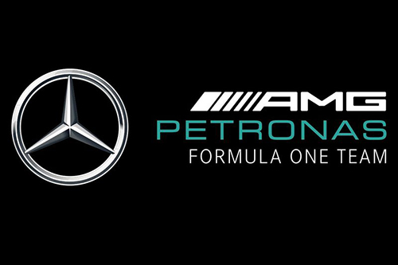

AMG Petronas Mercedes Formula One Team

Mercedes-Benz es una de las automotrices más exitosas de la Fórmula 1, considerada uno de los cuatro equipos con mejores resultados, junto con Williams, Ferrari y
McLaren.4 Participó inicialmente como constructor en Fórmula 1 en 1954 y 1955, y volvió a hacerlo desde 2010 hasta la actualidad. El equipo alemán ganó ocho
Campeonatos de Constructores de forma consecutiva (de 2014 a 2021). Es la tercera escudería que posee más Campeonatos de Pilotos, con 9 (1954, 1955, 2014, 2015,
2016, 2017, 2018, 2019 y 2020); ganados por Lewis Hamilton (6), Juan Manuel Fangio (2) y Nico Rosberg (1). También es el tercer equipo en la historia con más victorias
(124) y poles (135) en todos los ítems anteriores, solamente por detrás de Ferrari y McLaren.
El chasis y motor son construidos por Mercedes. Mercedes-Benz Group es la empresa propietaria de la escudería. Su director actual es Toto Wolff y sus pilotos son
Lewis Hamilton y George Russell.
Además, la marca ha sido fabricante de motores para otras escuderías, teniendo sus mayores éxitos con McLaren a finales de los 90 y en los años 2000.
La empresa volvió de forma no oficial suministrando motores a Sauber en la temporada 1993,65 aunque esta asociación se hizo oficial un año después.66
A partir de 1995, Mercedes suministró motores a McLaren, adquiriendo además un 45% del equipo y convirtiéndose en uno de sus socios principales. Son
muchos los éxitos cosechados a raíz de esta alianza: 3 campeonatos de pilotos y 1 de constructores (hasta 2008).
A partir de 2009, la marca de la estrella empezó a suministrar motores a la recién creada Brawn GP (escudería formada tras la salida de Honda F1 Team y con
orígenes en la extinta escudería Tyrrell Racing) y se asoció también con Force India, suministrando el motor y caja de cambios a esta escudería. Brawn ganó
los campeonatos de pilotos y de constructores de la temporada 2009 sin apenas dar opciones a sus rivales, mientras el equipo indio logró mejorar claramente
sus prestaciones.
Como proveedor de motores
Mercedes-Benz regresó a la categoría, luego de su primera participación como equipo, como proveedor de motores en 1994, en asociación la empresa británica Ilmor.
Suministró motores V10 a Sauber ese año, pero al año siguiente cambió a McLaren.. En 2009 se sumaron Force India (que había debutado el año anterior con Ferrari)
y el nuevo Brawn GP, este último obtuvo el Mundial de Constructores ese mismo año y fue adquirido por Mercedes-Benz para la temporada siguiente. En 2014 se sumó
Williams, y en 2015 McLaren, tras de dos temporadas sin victorias, pasó a ser suministrado por Honda, luego de una asociación que duró casi 20 años y logró 2
títulos en constructores. También suministró a Lotus F1 Team en 2015 y Manor Racing en 2015 y 2016, respectivamente.
Actualmente la escudería suministra motores a Aston Martin, Williams y a McLaren, desde inicios de la temporada 2021.